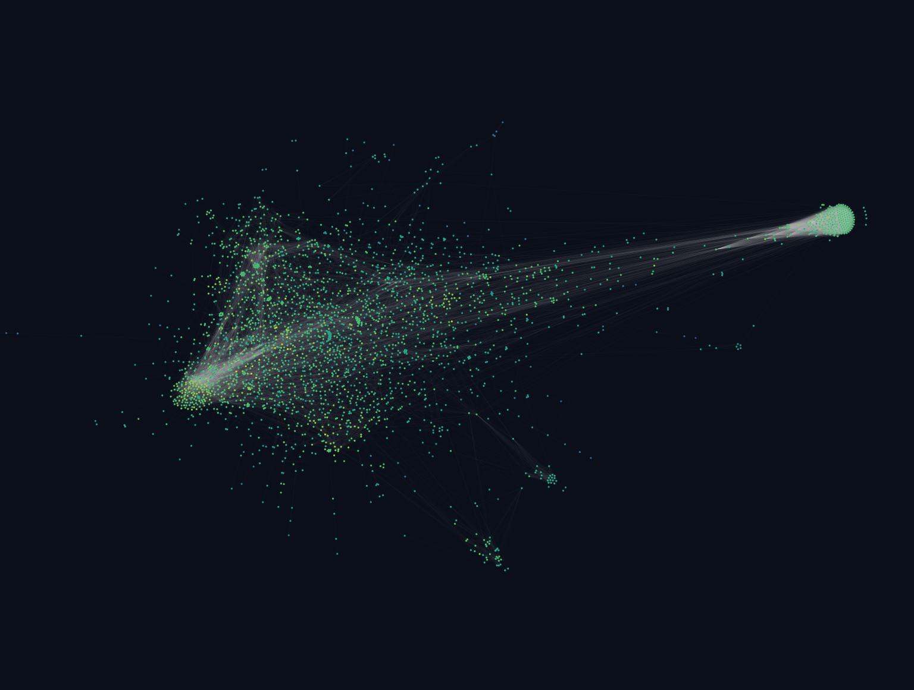
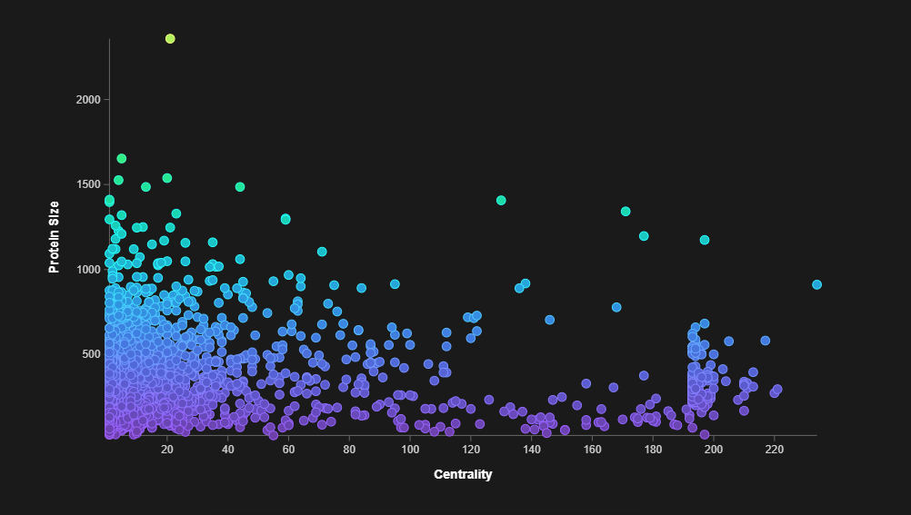
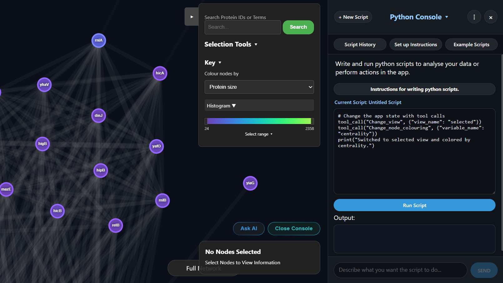
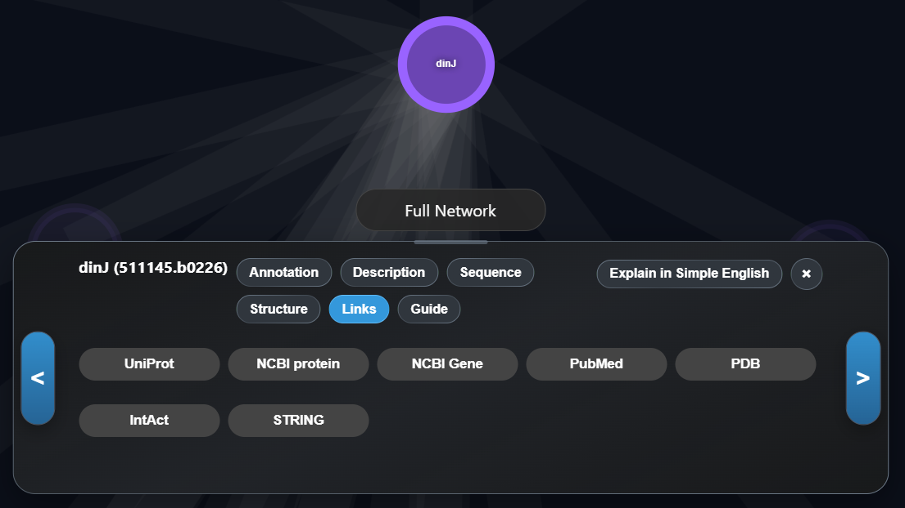
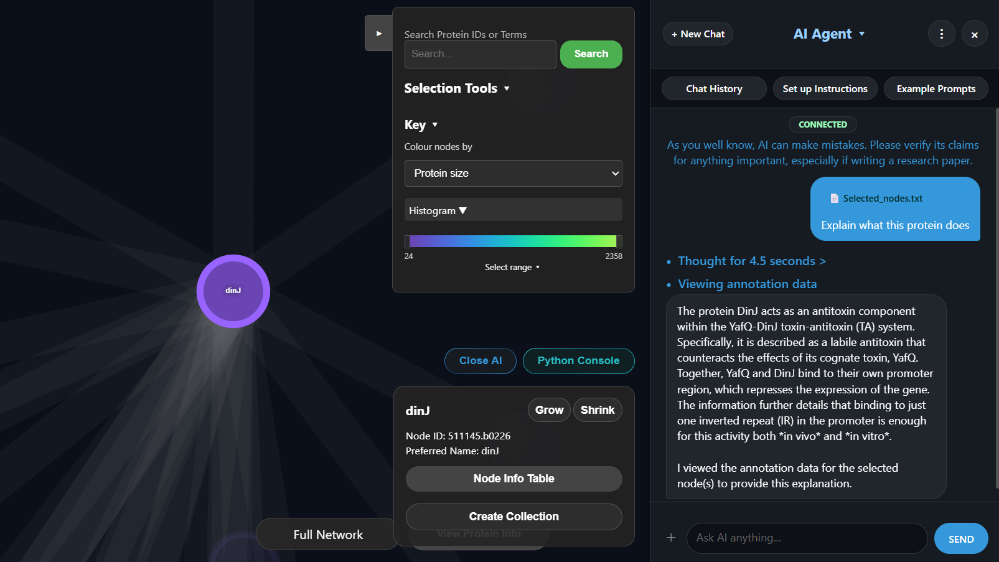

Interactive Biological Networks
View and explore the full STRING network from any species. The app runs compute-heavy tasks on your local GPU, making it super fast and responsive.

E. coli STRING Physical-Interaction NetworkSynchronized Views & Variables
Color and size nodes based on any STRING or custom variables. Visualize these variables as histograms, pie charts, scatter plots, mind maps, or UMAP plots. All views are Synced allowing you to select proteins in one view and see those same proteines selected in another view.

Scatter PlotVisualize High-Dimensional Embeddings
View 2D and 3D UMAP plots of both network- and sequence-embedding spaces. Easily identify functional and structural similarities among your proteins.
 2D/3D UMAP Embedding Space Placeholder
2D/3D UMAP Embedding Space Placeholder
Secure Sandbox Python Console
Run advanced analysis natively utilizing an integrated Python/pyodide console. Write custom data workflows using powerhouse libraries like NumPy, Pandas, Biopython, NetworkX, and Scikit-learn directly inside your browser. No external servers or setup files required. These scripts can also be used to perform actions in the app via the same tool calls the AI agent uses.

Secure Sandbox Python ConsoleUseful Links and Export Options
Export publication-quality images of any view alongside organized spreadsheets of data subsets. Other export options include FASTA and JSON (for submission to the AlphaFold Server). The app also has links to useful information on other websites such as STRING, IntAct, UniProt, NCBI, and relevant PubMed papers.

Useful LinksIntegrated AI Research Agent
Connect local LLMs via LM Studio for private, free, unlimited AI compute. The agent can answer questions about the data, create interactive guides, perform actions in the app on your behalf, read the apps own code, and help debug issues.

Integrated AI Research Agent